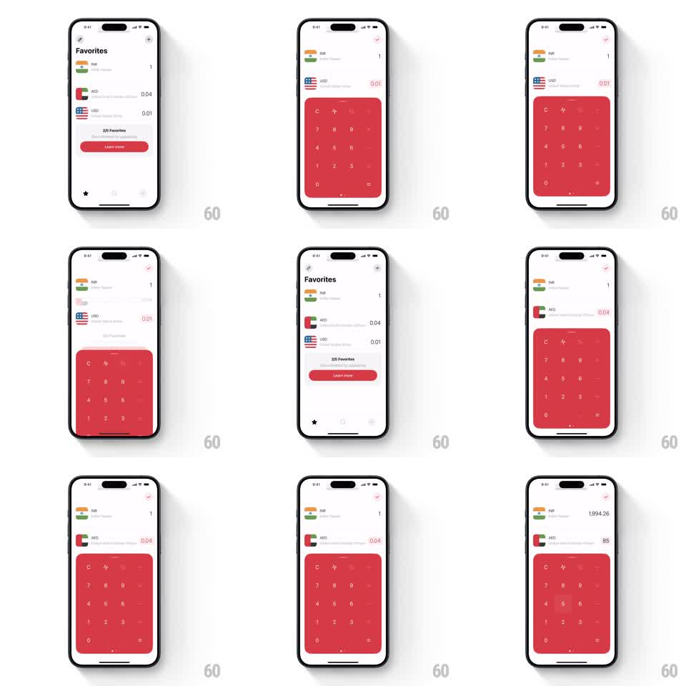

Media
Frame-by-frame

Rebuild this interaction 1:1: the converter's keyboard morph - the favorites list slides aside as a big red numpad springs up from below, and the layout reflows around it without a hard cut.

Rebuild this interaction 1:1: the converter's keyboard morph - the favorites list slides aside as a big red numpad springs up from below, and the layout reflows around it without a hard cut. ## Integration Integration: stack-agnostic spec - springs given as stiffness/damping, timed motions as duration + curve; map every value to your framework and animation library of choice. ## Scene Currency converter: up to two selected currency rows with amounts on top, a favorites list below, and a full-width red numpad (digits, operators, equals) that occupies the lower half in entry mode. ## Motion spec Pattern: layout morph between list and keyboard, ~600ms. - Entering edit mode: the red numpad springs up from the bottom (spring stiffness 260 damping 24), keys fading in with a 30ms row-by-row stagger as it rises. - The favorites list slides down and condenses out of view on the same beat; the two currency rows reflow upward, their amounts right-aligning and growing as the editable value takes focus (300ms layout spring). - Typing updates the active amount live; the converted row's amount rolls to match. - Dismissing (checkmark) reverses the morph: the numpad slides down, the favorites list slides back up into place. - A horizontal swipe on the rows area also paged between favorites and numpad, tracking the finger 1:1. ## Calibration - The numpad's rise and the list's retreat share one spring - two separate animations read as a collision. - The editable row is always the top row when the keyboard is up; focus never strays to the converted row. ## Reduced motion Keyboard and list crossfade in place. ## Don't miss - The numpad's top corners are rounded only where it meets the content; the morph must not stretch the key grid. - Amounts keep full precision through the transition - no rounding flicker while the layout moves.